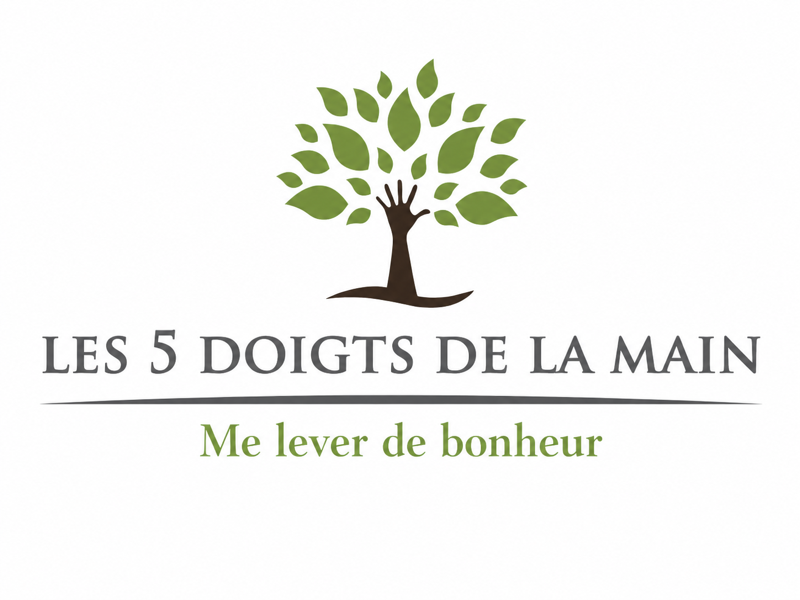

Massages & réveil énergétique
Massage intuitif, massage aquatique et rituels courts pour une personne ou un collectif.
DécouvrirAssociation en Valais
Créer du lien par le corps, le jeu, les émotions et le vivant.
Les 5 doigts de la main est une association en Valais qui propose des espaces simples pour bouger, ressentir, créer, prendre soin et vivre des expériences collectives. À travers des ateliers, des massages intuitifs, des colos pour adultes, des animations participatives et Mission Déclic, le projet cherche à remettre du lien dans le réel.

Les grands espaces
Chaque proposition peut s’adapter à un groupe, une école, une entreprise, un événement, une famille ou un lieu culturel, en Suisse romande et en France.
Massage intuitif, massage aquatique et rituels courts pour une personne ou un collectif.
DécouvrirPlayful extatique, improvisation, réveil du corps, jeux de mouvement et « À portée de main ».
DécouvrirRetrouver l’esprit d’une colo et construire ensemble un séjour où chacun peut apporter sa magie.
DécouvrirDes jeux et propositions vivantes pour rendre chacun acteur et créer des souvenirs de groupe marquants.
DécouvrirUn outil participatif avec des missions à vivre pour déclencher des rencontres dans la vraie vie.
DécouvrirDes lieux, associations, écoles et initiatives existantes à faire connaître.
ExplorerUn atelier bien-être, une animation festival, un massage événementiel, une colo pour adultes ou un séjour créatif pour adultes peuvent naître d’une envie encore floue. Nous pouvons regarder la forme la plus juste, selon le lieu, la durée et le public.
Parler de ton idée